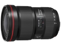

器材库 > 35mm画幅AF变焦镜头 > EF 16-35/2.8L III USM

详细规格
镜头类型
广角变焦镜头
发布日期
2016-08-25
焦距
16mm-35mm
最大光圈
f/2.8
最小光圈
f/22
视角（对角）
108°10 - 63°
镜头结构
16片/11组
非球面镜片
3片
低/超低色散镜片
2片
光圈叶片
9片
最近对焦距离
28cm
最大放大倍率
约0.25倍
驱动马达
USM（超声波马达）
滤镜口径
82mm
镜头卡口
Canon EF
防抖
否
颜色
黑色
尺寸
88.5×127.5mm
重量
790g
备注
防水滴防尘结构
longyu11292017-12-31 22:595 分
操作性 5.00耐用性 5.00性价比 5.00解像力 5.00色彩还原 5.00机械结构 5.00
当鸽子哭泣时2016-09-03 23:14
产品图 / 样片
EF 16-35/2.8L III USM
评测 / 相关文章
- 详细内容 （存档）
- F2.8广变王者 佳能EF16-35/2.8L III USM评测 （存档）
- ［行情］佳能16-35/2.8 III最新低价 （存档）
- ［行情］佳能EF16-35三代冰点价秒杀 （存档）
- ［试用］锐度惊人 深度体验佳能16-35 III （存档）
- ［试用］2016秋季贵州行 佳能16-35/2.8L Ⅲ的旅行 （存档）
- ［行情］佳能16-35/2.8 III最新低价 （存档）
- ［资讯］DP公布2016年度最佳镜头大奖 （存档）
- ［行情］继续回落 佳能16-35/2.8 III最新低价 （存档）
- ［资讯］DxO公布EF16-35/2.8L III成绩 （存档）
- ［试用］佳能EF16-35/2.8L III USM实拍样张 （存档）
相关文章
- ［行情］佳能EF16-35三代冰点价秒杀 （存档）
- ［试用］锐度惊人 深度体验佳能16-35 III （存档）
- ［试用］2016秋季贵州行 佳能16-35/2.8L Ⅲ的旅行 （存档）
- ［行情］佳能16-35/2.8 III最新低价 （存档）
- ［资讯］DP公布2016年度最佳镜头大奖 （存档）
- ［行情］继续回落 佳能16-35/2.8 III最新低价 （存档）
- ［资讯］DxO公布EF16-35/2.8L III成绩 （存档）
- ［试用］佳能EF16-35/2.8L III USM评测 （存档）
- ［试用］佳能EF16-35/2.8L III USM实拍样张 （存档）
- ［行情］佳能16-35/2.8第三代国内上市 （原站已下线）
- ［行情］佳能16-35/2.8 III最新低价 （存档）